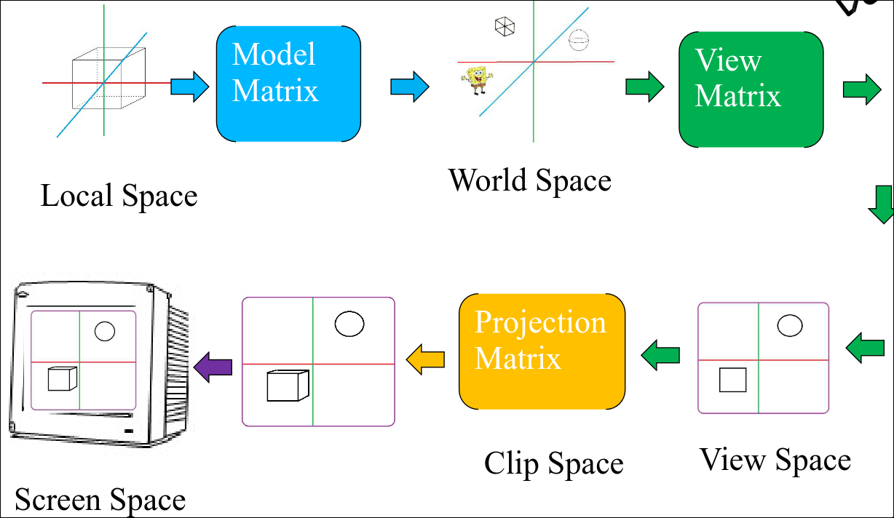
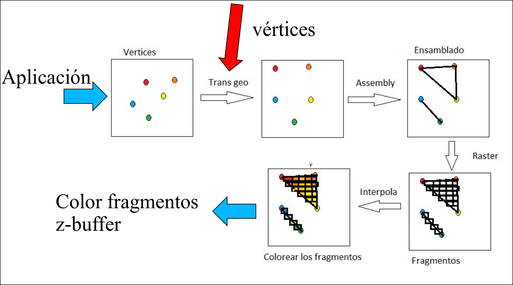
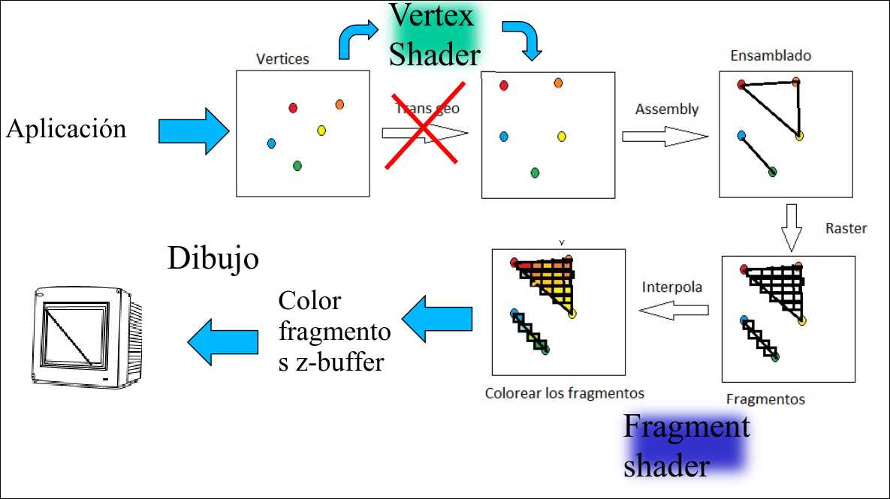
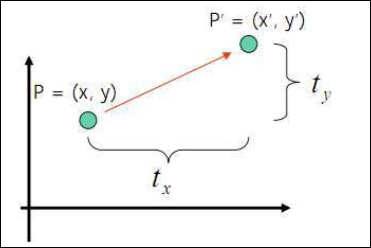
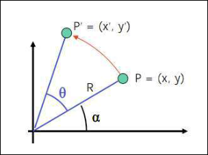
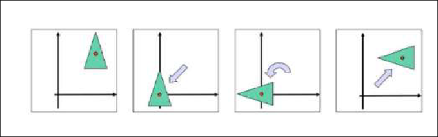

COGA · curso 2
3. Transformaciones
3.1 Transformaciones
En la pipeline gráfica se describen varios espacios de trabajo:
- El Local Space es el sistema de coordenadas locales de los objetos con relación a su origen local.
- El World Space es el sistema de coordenadas de escena o de mundo de los objetos con relación al origen general.
- La Model Matrix transforma las coordenadas locales de la escena, trasladando, rotando y escalando los objetos hasta colocarlos en su posición final.
Las transformaciones geométricas se usan para trasladar, escalar y rotar los objetos y la cámara de la escena.

En la pipeline fija (Opengl 1.2) el paso de coordenadas locales a coordenadas de la escena se corresponde con el paso transformación geométrica.

En el retained mode (Opengl 3.3) el paso de coordenadas locales a coordenadas de escena se realiza mediante el Vertex Shader.

3.1.1 Traslación
Llamamos traslación a mover un objeto (todos sus vértices) de un lugar a otro. Si queremos trasladar un punto
En Opengl 1.2 glTranslatef(Tx, Ty, Tz)

3.1.2 Rotación respecto al Origen
Llamemos rotación respecto al origen a desplazar un ángulo
En Opengl 1.2 glRotatef(θ, x, y,z) donde

3.1.3 Rotación General
Para desplazar un ángulo
- Traslación al origen.
- Rotación respecto al origen
- Traslación a

3.1.4 Ángulos de Euler
Dados dos sistemas de coordenadas glRotatef(θ, x, y,z) se pondría
3.1.5 Escalado respecto al origen
Llamamos escalado a cambiar el tamaño de un objeto (todos sus vértices). No es una transformación de cuerpo rígido ya que la geometría varía. Para escalar multiplicamos por los coeficientes de escalado, que serán la razón entre las coordenadas nuevas y viejas:
- Si
se realiza un escalado uniforme se realiza un escalado no uniforme
Para escalar un punto
En openGl(1.2) glScale(Sx, Sy, Sz)
3.1.6 Escalado General
Para escalar un objeto (todos sus vértices) cuando el origen de coordenadas no está en su interior sin producir un desplazamiento:
- Traslación al origen
- Escalado respecto al origen
- Traslación al punto inicial
3.2 Coordenadas Homogéneas
Para poder realizar todas las transformaciones mediante multiplicación de matrices hay que cambiar la forma en la que se realiza la traslación. Para esto utilizaremos las coordenadas homogéneas, que añaden un nuevo elemento
- En los puntos
- En los vectores
- No existe ni el (0,0,0) ni el (0,0,0,1).
3.2.1 Transformaciones en 2D
3.2.2 Transformaciones en 3D
Traslación
Rotación alrededor del eje Z
Rotación alrededor del eje X
Rotación alrededor del eje Y
Notación en columna
3.2.3 Zonas de una matriz
La zona azul serían transformaciones lineales, la verde traslaciones y la rosa ceros.